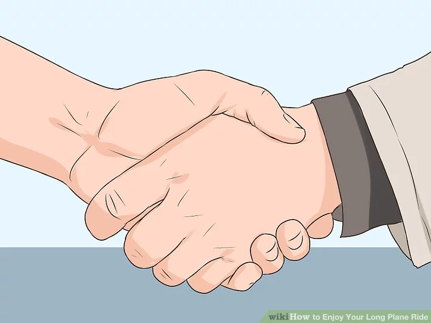

Being stuck in a small area over a long period of time can be difficult for even the most patient of people. How you transform your long haul flight from an ordeal into an enjoyable experience is a matter of preference. Some people find long flights ideal for getting work done, while others look at it as the perfect time to relax with books and movies. Whatever you prefer, with a little planning and preparation, your lengthy flight can become a pleasant part of your trip.
Part 1 of 4: Ensuring a Comfortable Flight
1. Get the best seat possible.
Although an upgrade to business or first class isn't always financially feasible, if possible, the extra room in these parts of the plane can make your trip much more comfortable. When traveling economy, try to reserve a seat on the aisle, as this will make it easier to go for a quick walk when you're feeling restless. You'll also be able to sprawl into the aisle for some extra leg room.
Some flyers prefer window seats.The benefit of a window seat is that you can use the side of the plane as a cozy nook in which you can sleep. Also, the view outside the plane can provide natural beauty you can enjoy if you find your activities are becoming tedious. The major drawback to window seats is the difficulty you'll face potentially crossing over two other people when going for a walk or trying to use the bathroom.
2. Devise ways to decrease discomfort.
Airline headphones/earbuds aren't always the highest quality, so you may want to bring a pair of your own. Noise-cancelling headphones, in particular, are praised by veteran long-haul flyers, though these can be expensive. Earplugs are a good, affordable substitution for these and can be bought at most drug stores.
You might want to download some relaxing white noise tracks onto your media player to drown out other passengers or loud children.Rain sounds, beach sounds, and meditative tracks with gentle music accompanying natural noises can transport you to a more tranquil place.
Many long flight travelers recommend wearing compression socks, especially when flying economy.The limited amount of space and long periods of time spent stationary can cause swelling in your feet and ankles or a dangerous condition called deep vein thrombosis. Compression socks can help prevent this.
3.Familiarize yourself with in-plane exercises.
Keeping your blood flowing and your body engaged can prevent soreness, swelling, and discomfort. The key to these kinds of exercises is small, controlled movement done consistently over time. Even if you're only raising your toes, doing this for 10 - 20 repetitions several times over the course of your flight will help keep your body limber. Speaking of raising your toes...
Raise your toes while sitting.Keep your heels on the floor and slowly raise your toes as high as you can. Then lower your toes, and repeat this motion with your heels while keeping your toes on the floor. Do this 7 - 10 times with controlled, deliberate motion.
Raise and twist your legs.You may have better results with this exercise if you recline your chair as much as possible first. Then, raise your legs as much as you can and rotate your toes in a clockwise motion until you complete at least 6 rotations. Then repeat the motion going counterclockwise the same number of rotations.
Bring your knees to your chest.This engages both your abdominal muscles and your legs. Lean forward a little bit so your back is off your chair. After that, bring one knee as close to your chest as you can, using both hands to support it gently. Hold this pose for 15 to 20 seconds, then lower your leg and repeat the process with your other leg. Do this at least 3 times.
4.Create an in-flight schedule.
Your schedule doesn't have to be set in stone, but by plotting out your plans for your flight time you can arrange activities to prevent boring gaps during your journey. You might plan on spending the first two hours of your trip getting situated and doing some light reading. At about the third hour of your flight, complimentary beverages, including alcohol, are usually offered. You may want to skip alcoholic drinks; the cabin will already be dry, alcohol can lead to dehydration, and alcohol can also hurt your quality of sleep. After that you might:
Consider taking a nap or getting as much sleep as possible at around the five hour mark.Natural sleep aids, like chamomile, Valerian root, and melatonin may help.By planning a nap toward the middle of your long flight, you break up your activities so you hopefully won't get bored of in-seat entertainment.
Think about a walk down the aisle at the eight hour mark.Even regular in-seat exercise isn't a substitute for stretching your legs. After your nap, a little past the halfway point of your flight, excuse yourself from your seat and take a stroll. This is also a good opportunity to visit the restroom and freshen up with your in-flight toiletry bag.
Enjoy your planned activities between hours eight and ten of your trip.Settle in for a good movie, read your book, do your puzzles -- occupy yourself with all the enjoyable things you've brought along for the flight.
Try to catch a little more rest at hour ten.Your quality of sleep on a long flight probably won't be as good or as long as what you're used to. If you feel sleepy, listen to your body, but following a relaxing movie, a good read, or some puzzle work, you might find yourself ready for another short nap.
Finish out the rest of your flight with planned activities.This is also a good chance for you to do your in-flight exercises. Doing your exercises now will prepare your body for de-planing, snagging luggage, and making your way to a hotel or wherever it is you're headed. You might also want to take another trip to the restroom an hour before you land so you feel refreshed when you reach your destination.

Part 1 of 8: Having a Good Time on Your Flight
1.Brainstorm possible activities.
Think about and make a list of activities you like to do in enclosed spaces, like your room, school, or office. Some common in-flight activities include reading, listening to music, watching movies, and doing homework/work. Don't forget any hobbies you might have that can be done in a seat, like drawing, knitting, playing chess, doing puzzles (like sudoku or crossword puzzles), folding origami, and so on.
You might also want to consider practicing meditation before you step on board your flight.Some people experience flight anxiety, and many people become uncomfortable during a long flight. Meditating on your flight can help calm you down and put your body in a relaxed state.
A long flight might also be a good time for you to try out a new activity, especially if you find that you normally don't have free time to try something new.If you've always thought about giving sudoku a shot but have never had a chance, your long plane ride might be just the place to focus on and try out a new activity like this!
2.Scope out free seats.
Some long haul flights will be less crowded than others. Keep your eyes peeled when boarding and settling into your seat. If you notice some seats that look empty, call over a flight attendant and ask if you might move to those seats so you and the other passengers can have more room. Don't be shy when asking - in many cases, open seats are available on a first-come, first-served basis.

3.Make a friend.
Even if it feels awkward introducing yourself to a stranger, remember that your seat-mates are likely feeling the same thing. Being on friendly terms with those sitting next to you can make it seem less of a bother when you need to exit your row to use the restroom or go for a walk.
To help making friends with those sitting around you, you might bring an extra snack to offer.Even if your seat-mate refuses, most people will appreciate the gesture of good will.
You might engage your seat-mates in a game, like chess, or ask for help with a difficult puzzle.You might say something like, "Hi, my name's Tom, you wouldn't happen to know anything about famous people, would you? Thirteen down in this crossword has got me stumped."
4.Consider changing into pajamas.
Routine can help put you in the mood for slumber. Even though you'll be in an enclosed, unfamiliar space on your plane, heading to the bathroom to change into nightwear/pajamas could be just the thing to help you nod off. These lightweight garments can usually be packed in your in-flight bag without taking up too much room.
You might also find it easier to fall asleep if you take your shoes off and give your toes some wiggle room.If you are uncomfortable putting your stockings down on the airplane floor, you can ask your flight attendant for an airline blanket and use this to rest your feet upon.
If you're traveling for business and are wearing a suit jacket or blazer, in many cases you can request a flight attendant hang your jacket up so it doesn't get wrinkled.This way, you can keep your business clothes crisp and fresh while you rest.
5.Get cozy when trying to sleep.
Although your space in-flight will be limited, there are still ways you can get comfortable when you're trying to drift off to sleep. If you have a window seat, you can pull the window shade down and rest your head on it. But even if you don't have a window seat, remember to recline your chair! Even a slightly backwards lean to your chair can improve your comfort levels.
If you don't have a pillow, a jacket or a scarf can do in a pinch.Fold or ball up an article of clothing to make a comfortable pillow for your head.
If you are trapped in a middle seat, attempt various positions to find what's most comfortable for you.You may find that leaning to the left or right in your reclined seat helps considerably. You might even be able to create a surface to lean against by wadding up extra clothing, like a sweatshirt.
Remember to buffer your lower body from discomfort.Sleeping while mostly upright can put unpleasant pressure on your lower back. Sitting on a pillow, even one of the U-shaped variety, can help relieve that pressure, give a slight lift to your legs, and add to your comfort.